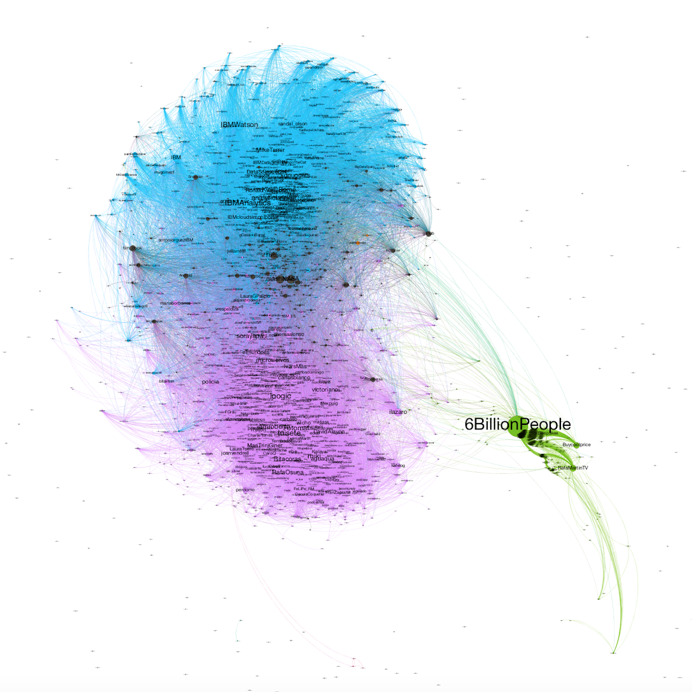

Connected
Last update: 10 Feb 2018
Este es un primer boceto del proyecto. Quiero sacar más tiempo para terminar de describir bien todos los pasos que seguí.
Más información debajo del grafo.

La idea principal era comprobar si se podían obtener grupos claros en mi red de Twitter.
Para ello hice un script capaz de obtener los seguidores que tengo. A partir de ahí, busqué los seguidores de ellos. Es decir un segundo grado.
Al hacer las búsquedas vía API de Twitter, tenía la limitación de 15 llamadas por cada 15 minutos. La descarga de los datos la programé en Python. El programa se ejecutó en una Raspberry PI durante un par de días, aprovechando esas ventanas de 15 min.
Una vez tenía los datos usé algunos algoritmos para poder separar mejor los nodos y comprender los grupos que se formaban porque eran seguidores entre ellos.
En azul se ve claramente a todo el grupo con relación a IBM. En morado toda la gente que he seguido desde que tenía el blog (ya no es mío) de Soygik.com (blog con más de 10k visitas diarias) y que he conocido por Twitter o en congresos/eventos. En verde una cuenta que sigue a un montón de personas. Y entre medias, en gris periódicos online, o cuentas relacionadas con tecnología (como Mashable, NASA, GitHub, Tim Cook...).